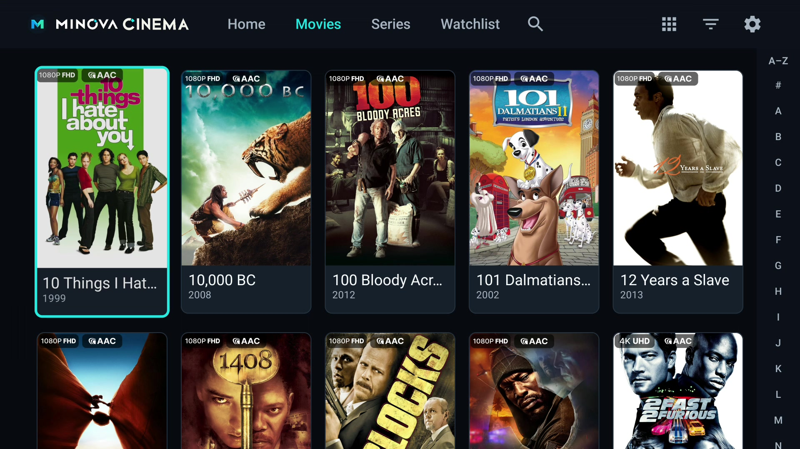
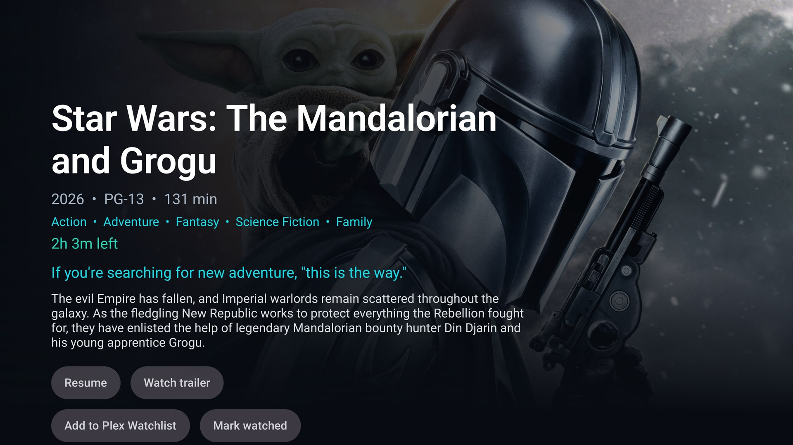
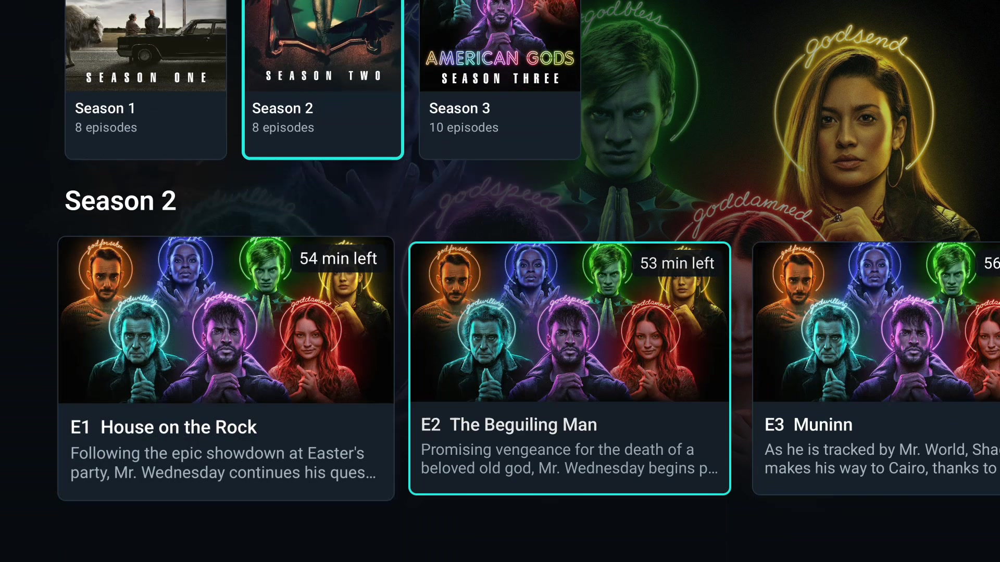
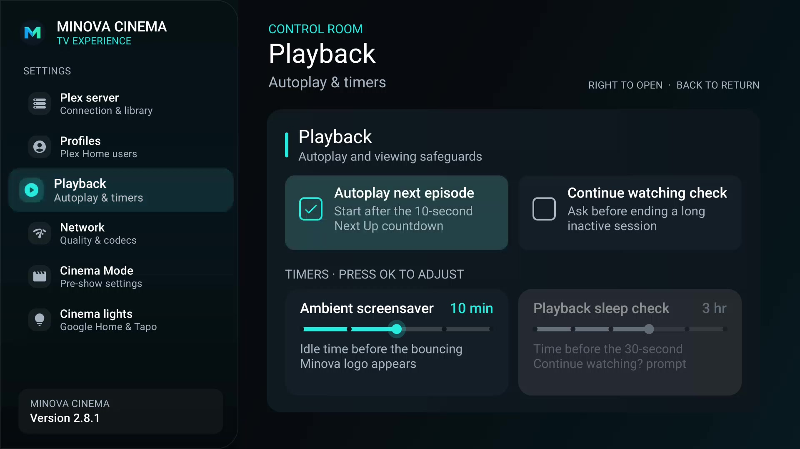

A / 01
Pick up where you stopped
Separate Continue Watching shelves, synced progress, Plex credit markers, and an optional ten-second autoplay countdown between episodes.

Android TV · Version 2.8.1
A quiet, cinematic home for the movies and shows already on your Plex server—built for the sofa, the remote, and the big screen.
Direct APK download · No Minova account · Connects directly to Plex
A 100-second tour of the actual Android TV app. Explore your library, find your next episode, and make the experience your own—all with the remote.
Press play when you're ready. All posters and backdrops come from the connected Plex library.
Minova Cinema turns Plex into a focused ten-foot interface. Every shelf, dialog, and playback control is designed around a D-pad—not a touchscreen pretending to be one.
Separate Continue Watching shelves, synced progress, Plex credit markers, and an optional ten-second autoplay countdown between episodes.

Search your connected library by title, genre, or year, with real Plex posters and media details.

Switch from shelves to a full poster grid. Filter by genre or jump through your collection with the A–Z shortcut.
Predictable focus, direct play and pause, clear watched states, and actions exactly where you expect them.
Cinema-grade controls
Minova Cinema shows exactly how Plex is delivering the picture, then keeps the important choices close without covering the frame.

See Direct Play, Direct Stream, or Transcoding, including which stream Plex is converting and why.
Uses Android TV and Media3 refresh-rate matching to present compatible content at its intended cadence.
Uses supported receiver passthrough at zero delay, with manual audio and subtitle timing correction when a TV needs it.
Skip Plex-analyzed intros and credits, jump between chapters, and switch quality, audio, and subtitles.
Each library has its own Continue Watching shelf and genre filters. Explore the real artwork on your server, then open a title for its story, seasons, and episodes.




The Control Room
Adjust autoplay, your ambient screensaver, and viewing reminders from one TV-friendly settings screen.

You enter your Plex server address and token on the TV. Minova Cinema connects to that server without a Minova account.
The interface is built around your media. It does not insert ads, recommendations from a storefront, or sponsored shelves.
The Android client and this website are published together on GitHub so the implementation can be reviewed.
Download the latest signed Android TV APK directly from Minova.
Download the latest APK ↓ without visiting the GitHub Releases page.
Transfer and sideload the APK, allowing installs from that source when Android prompts.
On first launch, enter your local Plex server address and Plex token. Follow the Plex setup guide if you need help finding them.
Follow the Plex setup steps, then add optional Tapo cinema lights.
No. It is an independent Android TV client that connects to a Plex Media Server. Plex is a trademark of Plex, Inc.
Direct play depends on the video, audio, and subtitle formats supported by your Android TV device and connected receiver. Plex can transcode incompatible sources when the server is able to do so.
Follow our step-by-step Plex guide for the server address and token. Treat your token like a password and never share it publicly.
Yes. Use the Minova Cinema feedback form → to report a bug or request a feature, or open an issue on GitHub.
The lights are dimming
{kind=link}
{kind=link}
{kind=link}
{kind=link}